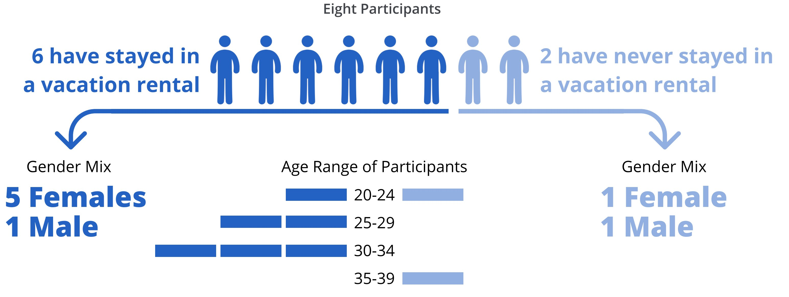

Process and Timeline
Research Stages
Generative Research
Literature Review
To better understand the context of the problem, we reviewed 14 articles that explored trust, whether it was trust in the sharing economy, trust in peer-to-peer marketplaces like AirBnb and Uber, or just the general concept of trust. There were three findings in particular from these articles that we felt had strong implications for this project:
- "Trust in the platform, trust in the community, trust in the seller, and trust in the buyer are extremely intertwined." From this we found that while we were focused on trust in peers from the consumer perspective, we could not ignore how trust in a brand might also influence trust in peers. (Source: Antecedents of trust in the sharing economy: A systematic review)
- "The representation of the product of service being shared is as important as the representation of the people doing the sharing." We felt that this led to a design implication for content and design elements to be sorted into categories (including host information and property information) in order to account for this differentiation. (Source: The sharing economy as community marketplace? Trust, reciprocity and belonging in peer-to-peer accommodation platforms")
- "User reputation is a driving force. The perception users have toward other users depends on multiple factors." This planted the seed that user reputation may be one of the most important elements of trust in P2P marketplaces. (Source: Digital Identity: the effect of trust and reputation information on user judgment in the sharing economy)
Competitive Analysis
We evaluated a total of 12 products: 4 direct competitors and 8 indirect. All 12 were P2P marketplaces though not all focused on vacation rentals. While there were no obvious patterns among the products, it did provide us with a sample of design patterns that we later used in our final mockups.
Heuristic Evaluation
As one of our final steps for contextual information gathering, we conducted a heuristic evaluation of HomeAway's current site to have a solid understanding of the current user experience. Doing this in tandem with the competitive evaluation also gave us a solid understanding of the key differences between HomeAway's interface and other P2P marketplaces. A sample of our evaluation is provided below.
Generative Interviews and Feature Prioritization
Now that we had a good understanding of the general concept of trust and how P2P marketplaces create their user experiences to try to instill trust in their users, it was time to talk to users themselves. We wanted users with a variety of experience in the sharing economy, so we did not screen out participants that had never stayed in a vacation rental. Out of 19 responses to our interview request, we had 16 qualified participants, 8 of which we scheduled interviews with.

We created an interview script with six sections: introduction, warm-up, sharing economy, vacation rentals, website exploration, and retrospective. The website exploration portion entailed allowing the participant to browse AirBnb.com, flipkey.com, and homeaway.com and provide us their candid thoughts as they searched for a similar property listing across the three platforms. We followed this up with a feature prioritization exercise, where we asked them to sort key content elements in order of priority for determining trust. These elements included: host information, property information, booking information, fees, policies, ratings & reviews, and photos of property. We finished up with a retrospective, asking the users to define trust and what it means to them in the context of what we had discussed in the interviews.
Data Coding and Affinity Diagram
After the conclusion of the interviews, we input all of our notes and observations (365 of them total) into a spreadsheet to start coding them and track key quotes. Each note or observation was assigned an observation ID, and the participant number and segment of the interview was also noted.
We then transferred our notes to stickies in order to create an affinity diagram and identify key themes. Given the amount of observations we had recorded, our affinity diagram took up two whole walls in a conference room. Despite the amount of work that went into this exercise, it allowed us to iteratively group the observations into categories and identify key themes and findings.
Key findings from the interviews and feature prioritization exercises are below:
- Branding is key in determining whether or not the participants will book with a marketplace. Some participants were repeat customers on AirBnb solely because of past experience with the company and the ease of already having an account, with no hard feelings towards HomeAway.
- When it comes to P2P vacation rentals, users are expecting unique experiences unlike a hotel stay. They were put off by the presence of property management companies hosting properties on vacation rental sites. For vacation rentals, users are expecting to rent from an individual, not a company.
- Unsurprisingly, photos of the property listing were marked as very important in determining trust, with users trusting listings with higher quality pictures because they seem to "be trying harder" as well as giving them an ability to fact-check the listing details.
- Users want transparency when it comes to P2P marketplaces like vacation rentals. They are not put off by hosts who indicate the listing is to make extra cash and actually appreciate their honesty. Payment transparency was also a big factor in liking AirBnb over HomeAway.
- A rather surprising finding was how much a property title factored into a user's trust in a listing. There was a fine line between a quirky title and "marketing crap." Additionally, users paid extra attention to host statuses to ensure that they have hosted quality experiences in the past.
- Interview participants also spent a good amount of time scanning a property's reviews, with some of them listing it as their number one item that the review when considering a rental. The importance of reviews was tied to the expectation of having more interaction with the host than one normally would in a regular hotel stay. A couple of female participants noted safety as another reason they combed through reviews, to ensure that past female guests had felt safe during their stay.
Survey
From the feature prioritization exercise we conducted during the interviews, we identified some key elements that were missing that participants expected to see during the exercise. We decided to re-run this same exercise by way of a survey, allowing us to collect more responses than in-person interviews would. The survey was simple and asked: Of the following options, select your top five that you believe influence your trust as you are browsing and choosing a vacation rental. We gave survey participants the following options:
We received a total of 87 valid responses to our survey - 59 females and 28 males. The top five features selected were:
- Content of reviews
- Rating
- Number of reviews
- Quality of photos
- Variety of photos
Summative Research -- section under construction, stay tuned!
Summative Interviews
Final recommendations -- section under construction, stay tuned!
Before
Current state of HomeAway
After
Key Metrics
Search, Filter, and Sort
Visual Hierarchy
Mobile experience
To download our final presentation, click here.